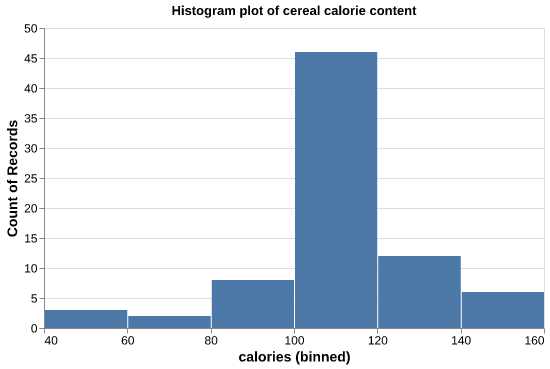

cereal = pd.read_csv('data/cereal.csv')More plotting tricks using Altair

| Data Type | Shorthand Code | Description | Examples |
|---|---|---|---|
| Ordinal | O |
a discrete ordered quantity | “dislike”, “neutral”, “like” |
| Nominal | N |
a discrete un-ordered quantity | eye color, postal code, university |
| Quantitative | Q |
a continuous quantity | 5, 5.0, 5.011 |
| Temporal | T |
a time or date value | date (August 13 2020), time (12:00 pm) |
Variable types

Histograms
Bins
chart7 = alt.Chart(cereal, width=500, height=300).mark_bar().encode(
x=alt.X('calories:Q', bin=alt.Bin(maxbins=20), title="Calorie Content"), # use alt.X() to label the x-axis
y=alt.Y('count():Q', title="Number of Cereals") # use alt.Y() to label the y-axis
).properties(title="Histogram plot of cereal calorie content")
chart7| protein | fat | sodium | fiber | ... | shelf | weight | cups | rating | |
|---|---|---|---|---|---|---|---|---|---|
| mfr | |||||||||
| A | 4.000000 | 1.000000 | 0.000000 | 0.000000 | ... | 2.000000 | 1.000000 | 1.000000 | 54.850917 |
| G | 2.318182 | 1.363636 | 200.454545 | 1.272727 | ... | 2.136364 | 1.049091 | 0.875000 | 34.485852 |
| K | 2.652174 | 0.608696 | 174.782609 | 2.739130 | ... | 2.347826 | 1.077826 | 0.796087 | 44.038462 |
| ... | ... | ... | ... | ... | ... | ... | ... | ... | ... |
| P | 2.444444 | 0.888889 | 146.111111 | 2.777778 | ... | 2.444444 | 1.064444 | 0.714444 | 41.705744 |
| Q | 2.625000 | 1.750000 | 92.500000 | 1.337500 | ... | 2.375000 | 0.875000 | 0.823750 | 42.915990 |
| R | 2.500000 | 1.250000 | 198.125000 | 1.875000 | ... | 2.000000 | 1.000000 | 0.871250 | 41.542997 |
7 rows × 12 columns
| protein | fat | sodium | fiber | ... | shelf | weight | cups | rating | |
|---|---|---|---|---|---|---|---|---|---|
| mfr | |||||||||
| A | 4.000000 | 1.000000 | 0.000000 | 0.000000 | ... | 2.000000 | 1.000000 | 1.000000 | 54.850917 |
| G | 2.318182 | 1.363636 | 200.454545 | 1.272727 | ... | 2.136364 | 1.049091 | 0.875000 | 34.485852 |
| K | 2.652174 | 0.608696 | 174.782609 | 2.739130 | ... | 2.347826 | 1.077826 | 0.796087 | 44.038462 |
| ... | ... | ... | ... | ... | ... | ... | ... | ... | ... |
| P | 2.444444 | 0.888889 | 146.111111 | 2.777778 | ... | 2.444444 | 1.064444 | 0.714444 | 41.705744 |
| Q | 2.625000 | 1.750000 | 92.500000 | 1.337500 | ... | 2.375000 | 0.875000 | 0.823750 | 42.915990 |
| R | 2.500000 | 1.250000 | 198.125000 | 1.875000 | ... | 2.000000 | 1.000000 | 0.871250 | 41.542997 |
7 rows × 12 columns
| mfr | protein | fat | sodium | ... | shelf | weight | cups | rating | |
|---|---|---|---|---|---|---|---|---|---|
| 0 | A | 4.000000 | 1.000000 | 0.000000 | ... | 2.000000 | 1.000000 | 1.000000 | 54.850917 |
| 1 | G | 2.318182 | 1.363636 | 200.454545 | ... | 2.136364 | 1.049091 | 0.875000 | 34.485852 |
| 2 | K | 2.652174 | 0.608696 | 174.782609 | ... | 2.347826 | 1.077826 | 0.796087 | 44.038462 |
| ... | ... | ... | ... | ... | ... | ... | ... | ... | ... |
| 4 | P | 2.444444 | 0.888889 | 146.111111 | ... | 2.444444 | 1.064444 | 0.714444 | 41.705744 |
| 5 | Q | 2.625000 | 1.750000 | 92.500000 | ... | 2.375000 | 0.875000 | 0.823750 | 42.915990 |
| 6 | R | 2.500000 | 1.250000 | 198.125000 | ... | 2.000000 | 1.000000 | 0.871250 | 41.542997 |
7 rows × 13 columns
- Groupby object and calculated the mean
- Reset index
- Plot using Altair
Sorting
chart9 = alt.Chart(mfr_mean, width=500, height=300).mark_bar().encode(
x=alt.X('mfr:N', sort="y", title="Manufacturer"), # use sort="y" to sort in ascending order
y=alt.Y('sugars:Q', title="Mean sugar content")
).properties(title="Bar plot of manufacturers mean sugar content in ascending order")
chart9chart10 = alt.Chart(mfr_mean, width=500, height=300).mark_bar().encode(
x=alt.X('mfr:N', sort="-y", title="Manufacturer"), # use sort="-y" to sort in descending order
y=alt.Y('sugars:Q', title="Mean sugar content")
).properties(title="Bar plot of manufacturers mean sugar content sorted in descending order")
chart10Data Visualization course